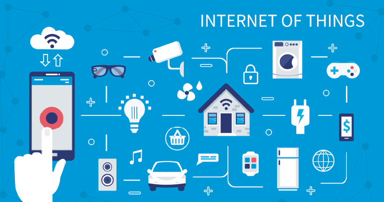
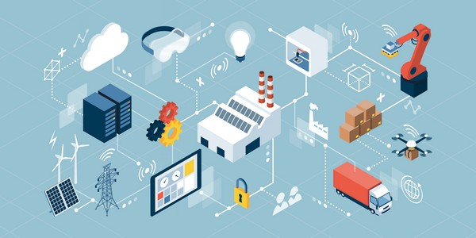
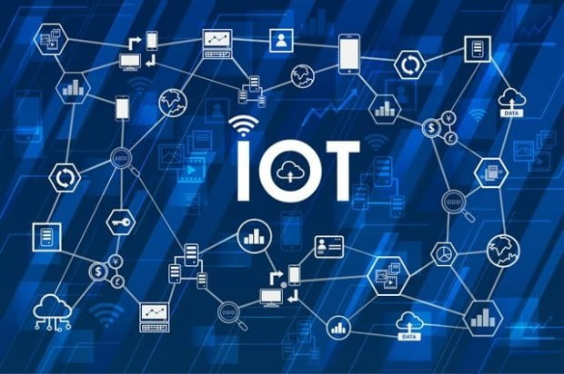
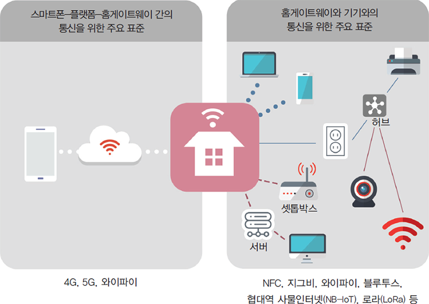
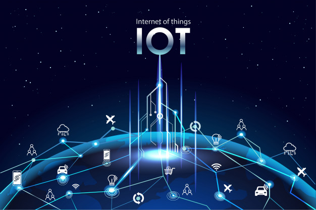

사물 인터넷
IoT란?
▼
사물 인터넷의 역사
사물 인터넷의 정의
IoT 사용분야
▼
Manufacturing
Health Care
Transportation and Logistics
Government
Energy
IoT 관련 기술
 
⟨
⟩
IoT시장 성숙도
IoT 갤러리
작아진 센서
기술의 발달로 극소형 센서가 개발
센서가 의류와 같이 독특한 곳에 내장
무선 인터넷 연결 및 통신 기술이 향상
IoT 데이터를 빠르게 송수신



4차산업혁명(바로가기)
4차산업혁명(바로가기)
IoT (나무위키)
나무위키
(바로가기)
IoT 성공 사례 보기